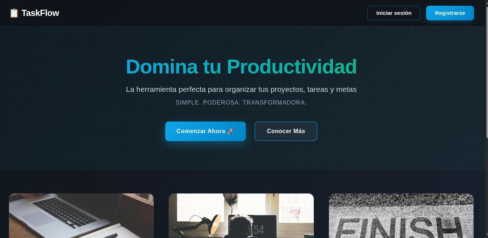
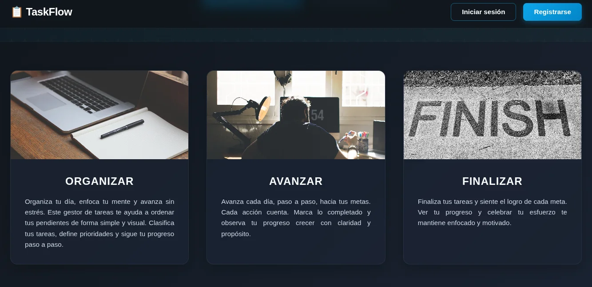
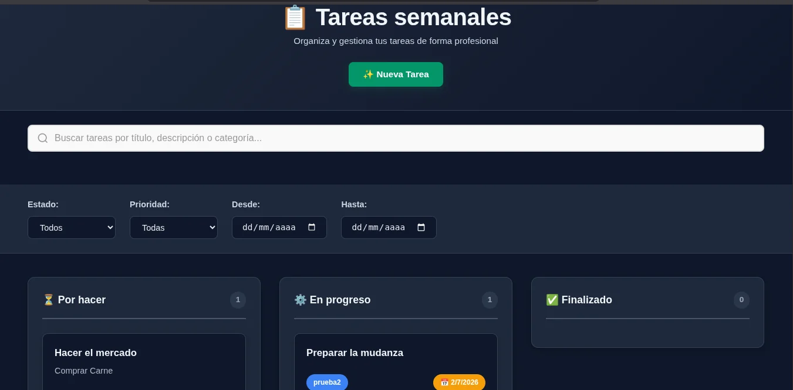

Gestor de Tareas es una aplicación web full-stack para gestión de proyectos y tareas con un tablero estilo Kanban (inspirado en Trello). Permite organizar el flujo de trabajo mediante columnas de estado: pendiente, en progreso y completado, con funcionalidad de arrastrar y soltar para mover tareas entre columnas.
Arquitectura
La aplicación sigue una arquitectura de tres capas bien diferenciada. El backend expone una API RESTful con más de 25 endpoints, el frontend es una SPA (Single Page Application) que consume dicha API, y la base de datos relacional almacena toda la información con migraciones controladas.
Tecnologías Utilizadas
Python + FastAPI
Backend asíncrono con generación automática de documentación OpenAPI
TypeScript + React
Frontend moderno con componentes reutilizables y tipado estático
Vite
Empaquetador rápido para desarrollo y builds de producción
SQLModel + Alembic
ORM con modelos Pydantic + migraciones de base de datos versionadas
PostgreSQL / MySQL
Soporte dual: MySQL en desarrollo local, PostgreSQL en producción (Render)
JWT + bcrypt
Autenticación segura con tokens de 30 minutos y hash de contraseñas
Características Principales
- Autenticación y autorización — registro, inicio de sesión con JWT, recuperación de contraseña por correo electrónico con token de 15 minutos
- CRUD completo — crear, leer, actualizar y eliminar proyectos y tareas
- Tablero Kanban drag-and-drop — arrastrar tareas entre estados (pendiente → en progreso → completado) nativo sin librerías externas
- Filtros y búsqueda — filtrar por título, categoría, prioridad, estado, rango de fechas, mes de creación y palabras clave
- Carga de imágenes — subir imágenes en las descripciones con validación por tipo MIME, bytes mágicos, y compresión automática con Pillow (máx. 800×800, JPEG calidad 80)
- Pegado desde portapapeles — las imágenes también pueden pegarse directamente (Ctrl+V) en el editor de descripciones
- Rate limiting — protección contra abusos en endpoints sensibles (5 intentos/min en login, 3/min en registro y recuperación de contraseña)
- Roles de usuario — usuarios normales y administradores con capacidades ampliadas (ver todos los usuarios, acceder a cualquier tarea)
- Seguridad en capas — whitelist de campos actualizables (protección contra mass assignment), verificación IDOR (un usuario solo ve sus propios recursos), headers de seguridad (HSTS, X-Frame-Options, X-Content-Type-Options, X-XSS-Protection)
API Endpoints
La API expone más de 25 endpoints organizados por recurso:
- Autenticación: login, forgot-password, reset-password
- Usuarios: CRUD de usuarios, promoción a admin
- Proyectos: CRUD completo con filtro por nombre
- Tareas: CRUD completo, búsqueda, filtros por múltiples criterios, carga de imágenes
Galería




Despliegue
Toda la aplicación está desplegada en Render: el backend FastAPI sirve como API
y también entrega los archivos estáticos del frontend compilado, todo bajo un mismo dominio,
con una base de datos PostgreSQL gestionada.
La configuración está automatizada mediante render.yaml.
Pruebas
El proyecto incluye pruebas automatizadas con Jest y Supertest, probando los modelos de datos con configuraciones de cobertura mínima del 80%.